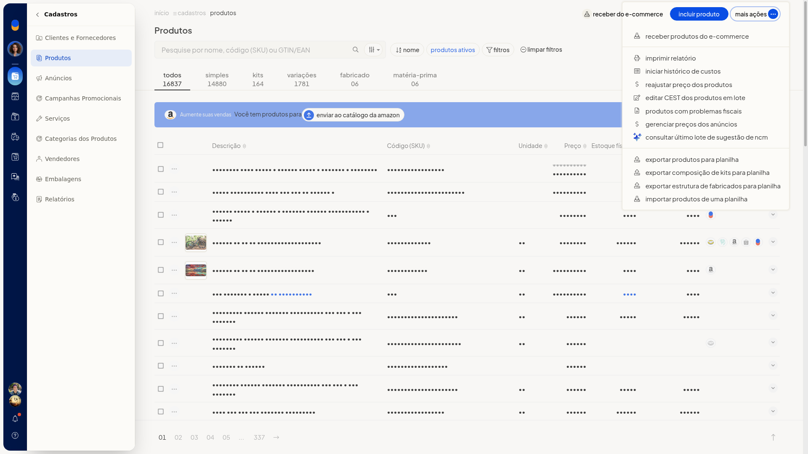
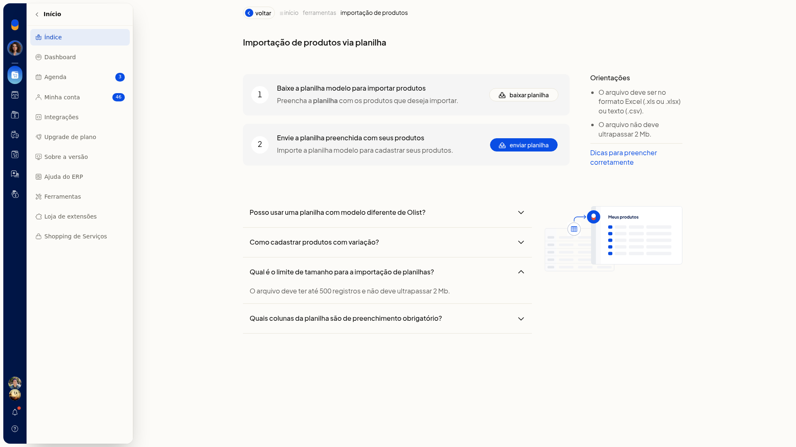
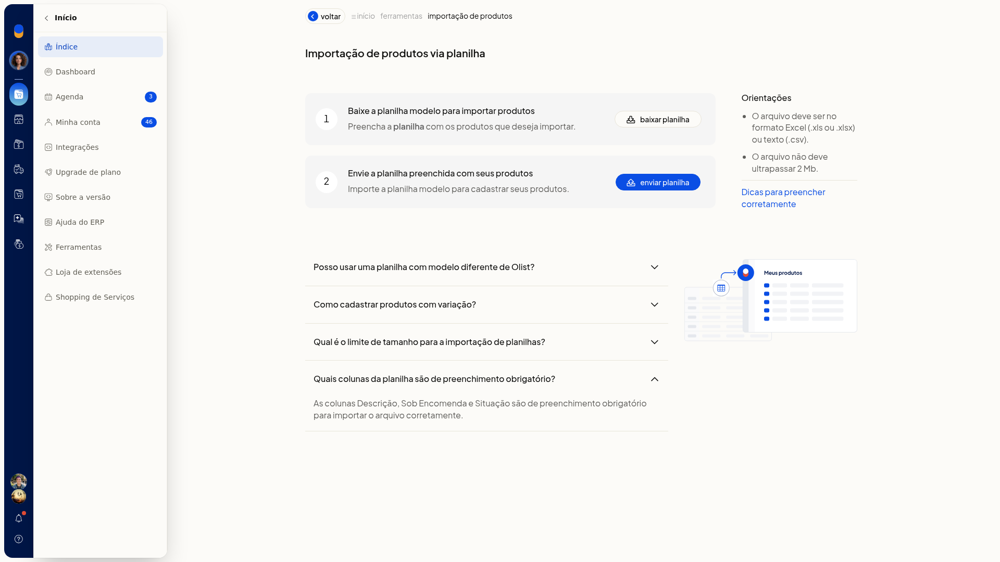
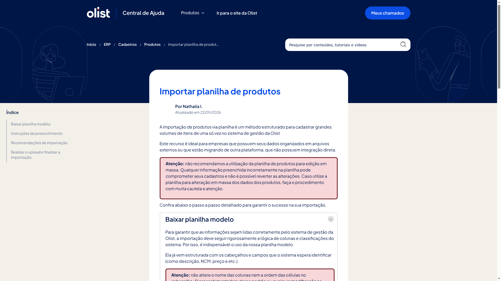
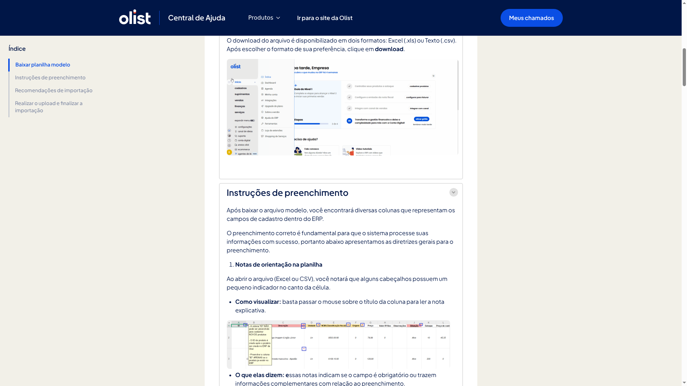
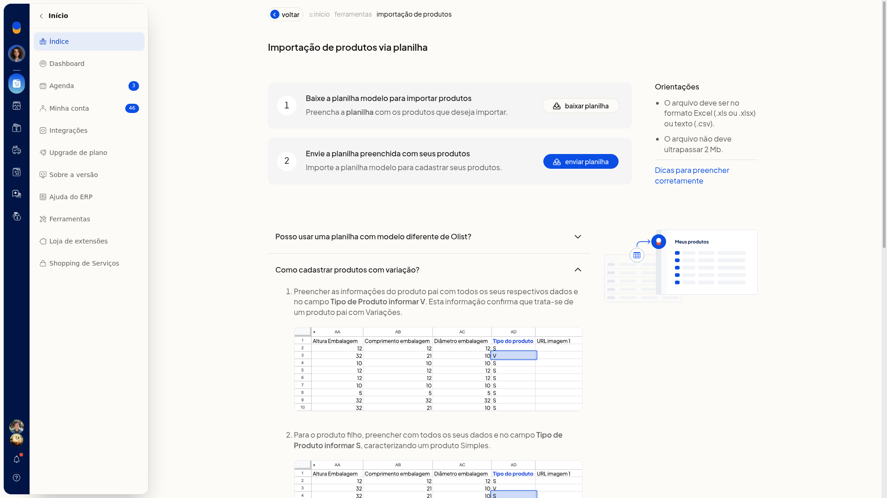
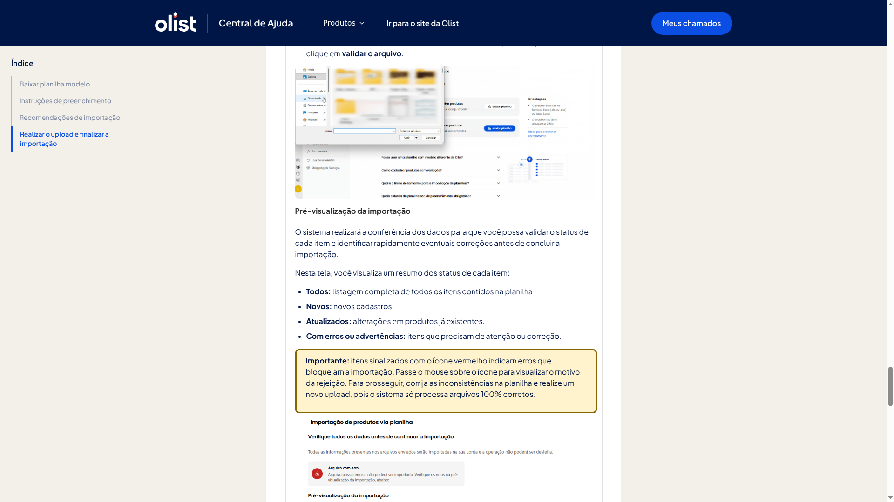
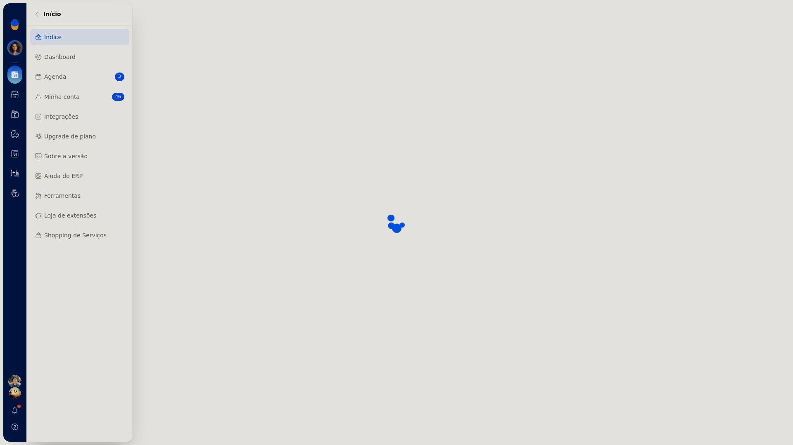
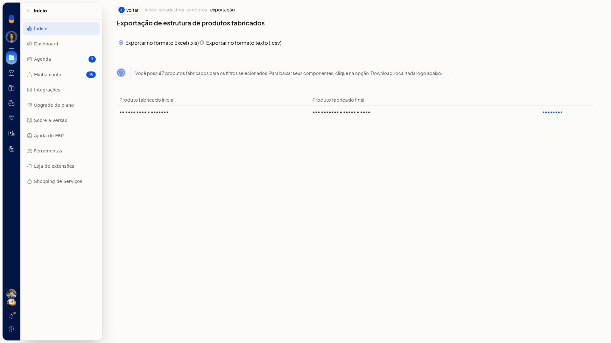

Importar e exportar produtos por planilha
Na listagem de produtos do ERP da Olist, você inclui ou atualiza produtos em lote com uma planilha e exporta, em Excel ou CSV, a lista filtrada ou os componentes dos produtos fabricados.
O modelo traz as colunas do cadastro. Nas exportações, o arquivo segue os filtros já aplicados na listagem.
Importante
- As exportações usam os filtros já selecionados em Cadastros > Produtos.
- Para exportar a estrutura de fabricados, esses filtros precisam incluir produtos fabricados.
- A importação aceita Excel (.xls/.xlsx) ou CSV, com no máximo 2 Mb e até 500 registros.
- Não renomeie, reordene nem apague colunas do modelo. Deixe em branco as colunas opcionais.
- Imagens na planilha precisam ser URL direta.jpg,.png,.webp ou.jpeg. Link de nuvem é rejeitado. O limite é de 10 imagens.
- O tipo do produto não pode ser alterado depois pela planilha. A composição de kit ou de fabricado vai em outra planilha.
Instruções
Como importar produtos
-
Acesse Cadastros > Produtos.
-
Clique em Mais ações e em Importar produtos de uma planilha.

-
Clique em baixar planilha para obter o modelo.


-
Preencha o modelo sem alterar o cabeçalho.
Colunas obrigatórias
- Descrição
- Sob Encomenda: Sim ou Não
- Situação: Ativo ou Inativo



Inclusão, atualização e tipo
- Deixe ID em branco para incluir um produto novo. Informe o ID exato para atualizar o produto existente.
- No pai da variação, use Tipo V. No filho, use S, K, F ou M, nunca V.
- Para kit, use a letra K. A composição vai em uma segunda planilha.
Variação
- Em Código do Pai, informe o SKU do produto pai.
- Preencha os atributos no formato Tamanho:GG||Cor:Branco, sem espaços ao redor de: ou ||.

Dados fiscais
- Unidade, como UN
- NCM com 8 dígitos, como 6109.10.00
- Origem de 0 a 8
-
Clique em enviar planilha e envie o arquivo. Em Dicas, a orientação descreve o reconhecimento do arquivo, a validação e a confirmação.

Como exportar produtos
-
Acesse Cadastros > Produtos.
-
Clique em Mais ações e em Exportar produtos para planilha.

-
Escolha Exportar no formato Excel (.xls) ou Exportar no formato texto (.csv).
-
Em Depósito para o Saldo em Estoque, mantenha Todos ou selecione um depósito já cadastrado.
-
Clique em Download na faixa desejada, entre Produto inicial e Produto final. A exportação separa o resultado em arquivos de 500. Para exportar tudo de uma vez, clique em agende uma tarefa.
Como exportar a estrutura de fabricados
-
Acesse Cadastros > Produtos.
-
Clique em Mais ações e em Exportar estrutura de fabricados para planilha.
-
Escolha Exportar no formato Excel (.xls) ou Exportar no formato texto (.csv).
-
Clique em Download na faixa exibida, entre Produto fabricado inicial e Produto fabricado final. A tela informa quantos produtos fabricados entram nos filtros selecionados.

Informações adicionais
- O mesmo menu Mais ações inclui Exportar composição de kits para planilha.
- A composição de kit ou de produto fabricado não entra na planilha de produtos: use a planilha correspondente.
- O tipo gravado no produto não muda em uma importação posterior.